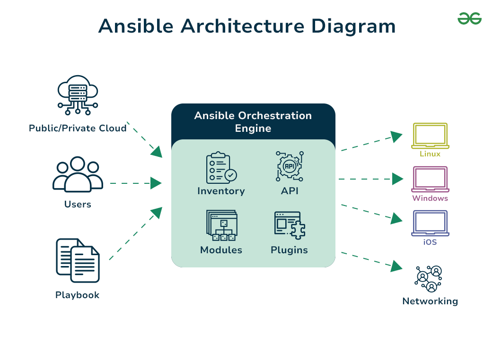

Ansible Role
Posted on Mon 10 June 2024 in Journal
| Abstract | Ansible Role |
|---|---|
| Authors | Walter Fan |
| Category | learning note |
| Status | v1.0 |
| Updated | 2024-06-10 |
| License | CC-BY-NC-ND 4.0 |
Ansible 是一款非常强大和方便的自动化脚本工具，可以实现批量部署，配置及其他的一些自动化操作。 它的设计理念很有意思, 使用 Ansible 时你就象一个导演, 你只需要写好剧本 playbook, 然后它就会根据你写的 playbook, 去执行你的任务。

Ansible 的剧本中也就角色 Role 的概念, 不同的 role 可以执行不同的剧本, 主要用途就是将 playbook 进行分组, 可将 playbook 进行分发, 这样就可以实现 playbook 的复用。
Roles let you automatically load related vars, files, tasks, handlers, and other Ansible artifacts based on a known file structure. After you group your content into roles, you can easily reuse them and share them with other users.
An Ansible role has a defined directory structure with seven main standard directories. You must include at least one of these directories in each role. You can omit any directories the role does not use.
七个主要标准目录, 每个角色至少要包含一个目录。你可以省略任何你不需要的目录。
例如:
roles/
common/ # this hierarchy represents a "role"
tasks/ #
main.yml # <-- tasks file can include smaller files if warranted
handlers/ #
main.yml # <-- handlers file
templates/ # <-- files for use with the template resource
ntp.conf.j2 # <------- templates end in .j2
files/ #
bar.txt # <-- files for use with the copy resource
foo.sh # <-- script files for use with the script resource
vars/ #
main.yml # <-- variables associated with this role
defaults/ #
main.yml # <-- default lower priority variables for this role
meta/ #
main.yml # <-- role dependencies
library/ # roles can also include custom modules
module_utils/ # roles can also include custom module_utils
lookup_plugins/ # or other types of plugins, like lookup in this case
webtier/ # same kind of structure as "common" was above, done for the webtier role
monitoring/ # ""
fooapp/ # ""
By default, Ansible will look in most role directories for a main.yml file for relevant content (also main.yaml and main):
缺省情况下, Ansible 会在 role 目录中查找 main.yml 或者 main.yaml
- tasks/main.yml
- 角色提供给剧本执行的一系列任务列表
-
handlers/main.yml
- 导入父剧本以供角色或剧本中的其他角色和任务使用的处理程序
-
defaults/main.yml
- 提供给角色的低优先级较低的变量
- 一个角色自己的默认变量会优先于其他角色的变量, 但任何/所有其他变量来源都可以覆盖它。
-
vars/main.yml
- 角色提供给剧本的高优先级变量
-
files/stuff.txt
- 角色及其子角色可用的一个或多个文件
-
templates/something.j2
- 角色或子角色中使用的模板。
-
meta/main.yml
- 角色的元数据，包括角色的依赖项和可选的 Galaxy 元数据，例如支持的平台。
- 这对于将独立的角色上传到 Galaxy 是必需的，但对于在 playbook 中使用则不是。
Example
1. 安装 Ansible
sudo apt-add-repository ppa:ansible/ansible
sudo apt update
sudo apt install ansible
2. 配置 ansible.cfg
# vi /etc/ansible/ansible.cfg
---------------------------------------------
[defaults]
roles_path = galaxy_roles:roles
deprecation_warnings = False
vault_password_file = ./vault_file
interpreter_python = /usr/bin/python3
3. 编辑 ansible playbook
- 编辑 inventory
[wordpress]
INSTANCE_IP ansible_ssh_private_key_file=/home/ubuntu/.ssh/MY_SSH_KEY
- 编辑 playbook
# vi install_wordpress.yml
---
- hosts: "{{ host | default('wordpress')}}"
become: true
vars:
wp_version: 5.7.1
wp_webserver: nginx
wp_mysql_db: 'database'
wp_mysql_user: 'mysql_user'
wp_mysql_password: 'mysql_pass'
wp_admin_email: 'admin@example.com'
wp_sitename: example.com
wp_install_dir: "/var/www/example.com"
roles:
- wordpress
这里所用的 role 可以参见 https://github.com/MakarenaLabs/ansible-role-wordpress/tree/master
4. 执行 ansible playbook
$ ansible-playbook -i production install-wordpress.yml -v
Reference
ansible glossary
| Ansible Keywords | Description |
|---|---|
| play | It termed for defining the set of tasks that to be executed On remote hosts. |
| task | An Action performed by ansible on remote hosts. |
| role | it is an organized structure directory with files containing a predefined set of tasks, handlers, variables and files |
| Module | These are Reusable, Standalone ansible scripts sued to perform tasks on Worker nodes. |
| vars | It is used for defining the variables that can be used through out the playbook for dynamic configurations. |
| register | This keyword helps in capturing the ouptut of the tasks and stores in a variable for later use in playbook. |
| notify | This keyword used to trigger the handlers when specific conditions are matched such as service state changes. |
ansible modules
| Ansible Modules | Usage |
|---|---|
| apt | This module manages the packages on Debian and Ubuntu Systems. |
| yum | This module manages the packages on Red Hat/ Cent OS systems |
| copy | This module helps in copying the files from local or Remote system to Destination system. |
| file | This module manages the files and directories in local or Remote system. |
| service | This module manages the services in the ansible |
| shell | This module helps in executing shell commands on remote hosts. |
| template | This module help in using the Jinja2 templates allowing dynamic content usage. |
| cron | This module helps in managing the cron jobs, including the creation, modification and removal. |
| git | This module helps in managing the repositories allowing tasks such as cloning, pulling and pushing. |
ansible command line
| Category | Command/Option | Explanation |
|---|---|---|
| General | ansible --version |
Display the version of Ansible installed. |
| General | ansible -m ping all |
Ping all hosts to check if they are reachable. |
| General | ansible -m shell -a 'free -m' all |
Run the 'free -m' shell command on all hosts. |
| --- | --- | --- |
| Playbooks | ansible-playbook playbook.yml |
Run the playbook named playbook.yml. |
| Playbooks | ansible-playbook -i inventory.ini playbook.yml |
Run a playbook with a specified inventory file. |
| Playbooks | ansible-playbook playbook.yml --syntax-check |
Perform a syntax check on the playbook. |
| Playbooks | ansible-playbook playbook.yml --start-at-task='taskname' |
Start the playbook at the specified task. |
| Playbooks | ansible-playbook playbook.yml --list-hosts |
List all hosts the playbook will run against. |
| Playbooks | ansible-playbook playbook.yml --list-tasks |
List all tasks the playbook will execute. |
| Playbooks | ansible-playbook playbook.yml --step |
Execute the playbook interactively, asking for confirmation at each step. |
| Playbooks | ansible-playbook playbook.yml --check |
Do a dry run of the playbook without making actual changes. |
| Playbooks | ansible-playbook playbook.yml --diff |
Show differences in files when running the playbook. |
| Playbooks | ansible-playbook playbook.yml --tags "tag1,tag2" |
Run only the tasks tagged with tag1 and tag2. |
| Playbooks | ansible-playbook playbook.yml --skip-tags "tag3" |
Skip tasks tagged with tag3. |
| Playbooks | ansible-playbook playbook.yml --limit servers |
Limit the playbook execution to the group 'servers'. |
| Playbooks | ansible-playbook playbook.yml --extra-vars "version=1.2.3" |
Run the playbook with extra variables. |
| Playbooks | ansible-playbook playbook.yml --forks=5 |
Set the number of parallel processes to 5. |
| Playbooks | ansible-playbook playbook.yml -v |
Run the playbook in verbose mode. -vvv and -vvvv can be used for more verbosity. |
| Playbooks | ansible-playbook playbook.yml --check --diff |
Dry-run the playbook and show file differences. |
| --- | --- | --- |
| Roles | ansible-galaxy init role_name |
Initialize a new role structure with the specified name. |
| Roles | ansible-galaxy install role_name |
Install an Ansible role. |
| --- | --- | --- |
| Vault | ansible-vault create vault.yml |
Create a new encrypted file. |
| Vault | ansible-vault view vault.yml |
View an encrypted file. |
| Vault | ansible-vault edit vault.yml |
Edit an encrypted file. |
| Vault | ansible-vault decrypt vault.yml |
Decrypt an encrypted file. |
| Vault | ansible-vault encrypt vault.yml |
Encrypt a file. |
| Vault | ansible-vault rekey vault.yml |
Change the password on a vault file. |
| Vault | ansible-vault encrypt_string --name 'var_name' 'string' |
Encrypt a string and output it in a format ready for use with Ansible. |
| Vault | ansible-playbook playbook.yml --ask-vault-pass |
Run a playbook and prompt for the vault password. |
| Vault | ansible-playbook playbook.yml --vault-password-file vault.pass |
Run a playbook using a file containing the vault password. |
| Vault | ansible-vault encrypt_string --stdin-name 'var_name' |
Read the string from stdin and encrypt it. |
| Vault | ansible-vault encrypt --vault-id dev@prompt vars.yml |
Encrypt a file using a prompt for the vault password. |
| Vault | ansible-playbook playbook.yml --vault-id dev@prompt |
Run a playbook using a prompt for the vault password. |
| --- | --- | --- |
| Configuration | ansible-config list |
List all configuration options. |
| Configuration | ansible-config dump |
Show the current configuration. |
| Configuration | ansible-config view |
View the current Ansible configuration. |
| Configuration | ansible-config dump --only-changed |
Dump configuration items that have changed from the default. |
| Configuration | ansible-config set ANSIBLE_HOST_KEY_CHECKING=False |
Set a specific configuration item. |
| Configuration | ansible-config unset ANSIBLE_HOST_KEY_CHECKING |
Unset a specific configuration item. |
| --- | --- | --- |
| Console | ansible-console |
Start an interactive console for executing Ansible tasks. |
| Console | ansible-console -i inventory.ini |
Start an interactive console using a specific inventory. |
| --- | --- | --- |
| Modules | ansible-doc -l |
List available modules. |
| Modules | ansible-doc module_name |
Get documentation for a specific module. |
| --- | --- | --- |
| Inventory | ansible-inventory --list -y |
List the inventory in YAML format. |
| Inventory | ansible-inventory --graph |
Show a graph of the inventory. |
| Inventory | ansible -i inventory.ini all -m ping |
Use a specific inventory file and ping all hosts. |
| Inventory | ansible-inventory --host hostname |
Display all variables for a specific host. |
| Inventory | ansible-inventory --playbook-dir . --graph |
Display a graph of the inventory from the current directory. |
| Inventory | ansible -i 'localhost,' -c local -m ping |
Ping localhost using local connection and ad-hoc inventory. |
| Inventory | ansible-inventory --list --yaml |
List inventory in YAML format. |
| --- | --- | --- |
| Pull | ansible-pull -U git_url |
Pull a Git repository of Ans |
| Pull | ansible-pull -U git_url |
Pull a Git repository of Ansible configurations on the target host. |
| --- | --- | --- |
| Galaxy | ansible-galaxy collection init my_namespace.my_collection |
Initialize a new collection with the given namespace and name. |
| Galaxy | ansible-galaxy collection build |
Build an Ansible collection package ready for distribution. |
| Galaxy | ansible-galaxy collection install my_namespace.my_collection |
Install an Ansible collection from Galaxy. |
| Galaxy | ansible-galaxy role init my_role |
Initialize a new role with the given name. |
| Galaxy | ansible-galaxy role install my_role |
Install an Ansible role from Galaxy. |
| Galaxy | ansible-galaxy list |
List installed roles and collections. |
| Galaxy | ansible-galaxy collection install -r requirements.yml |
Install collections from a requirements file. |
| Galaxy | ansible-galaxy role install -r requirements.yml |
Install roles from a requirements file. |
| Galaxy | ansible-galaxy collection publish ./namespace-collection-1.0.0.tar.gz --api-key=your_token |
Publish a collection to Galaxy using an API token. |
| Galaxy | ansible-galaxy role init --role-skeleton skeleton my_role |
Initialize a new role with a specified role skeleton. |
| --- | --- | --- |
| Modules | ansible localhost -m file -a "path=/tmp/test state=touch" |
Create a new file on the local host using the file module. |
| Modules | ansible localhost -m package -a "name=vim state=present" |
Install a package on the local host using the package module. |
| Modules | ansible localhost -m command -a "uptime" |
Run a command on the local host using the command module. |
| Modules | ansible localhost -m user -a "name=testuser state=absent" |
Remove user 'testuser' from the local host using the user module. |
| Modules | ansible localhost -m service -a "name=httpd state=restarted" |
Restart the 'httpd' service on the local host using the service module. |
| Modules | ansible localhost -m copy -a "src=/etc/hosts dest=/tmp/hosts" |
Copy '/etc/hosts' to '/tmp/hosts' on the local host using the copy module. |
| Modules | ansible localhost -m file -a "path=/tmp/test state=absent" |
Remove file '/tmp/test' on the local host using the file module. |
| Modules | ansible localhost -m apt -a "name=nginx state=latest" |
Install the latest version of 'nginx' on the local host using the apt module (Debian-based systems). |
reference
- https://github.com/devops-cheat-sheets/ansible-cheat-sheet
- https://www.geeksforgeeks.org/ansible-cheat-sheet/
- https://www.makarenalabs.com/ansible-for-it-automation-wordpress-as-an-example/
本作品采用知识共享署名-非商业性使用-禁止演绎 4.0 国际许可协议进行许可。